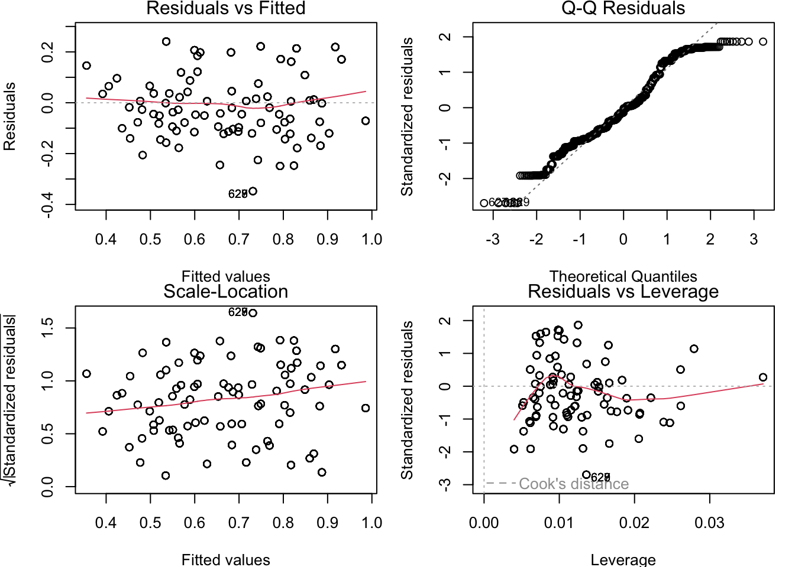
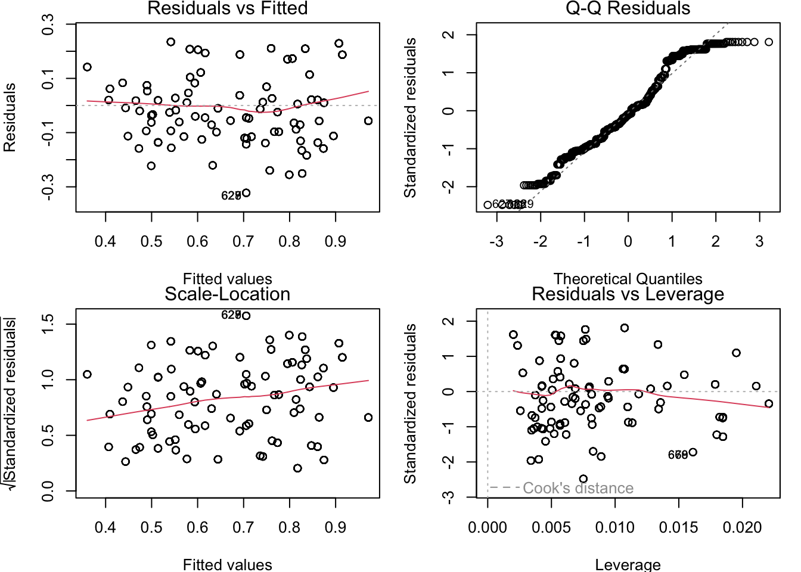
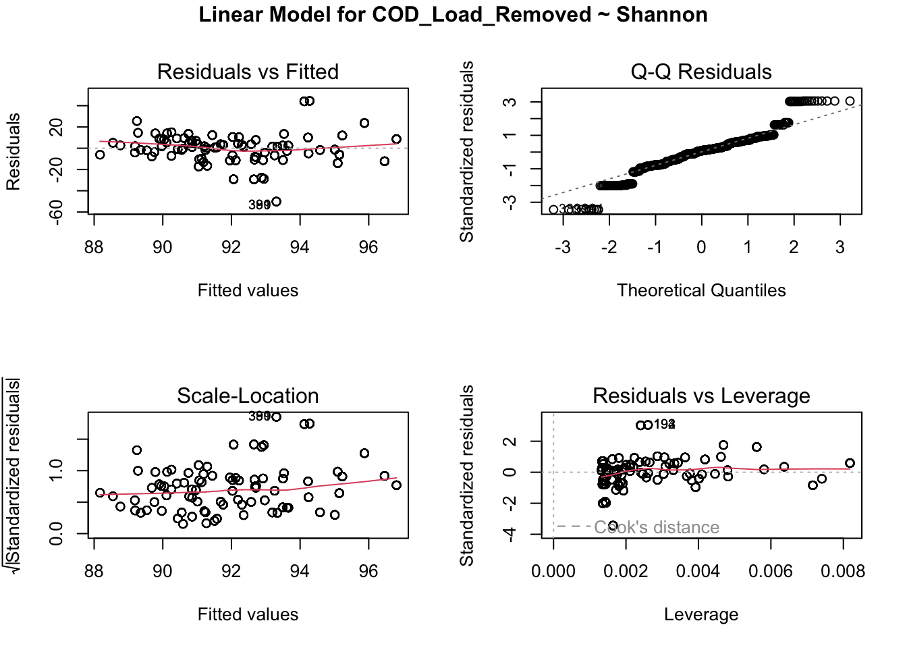
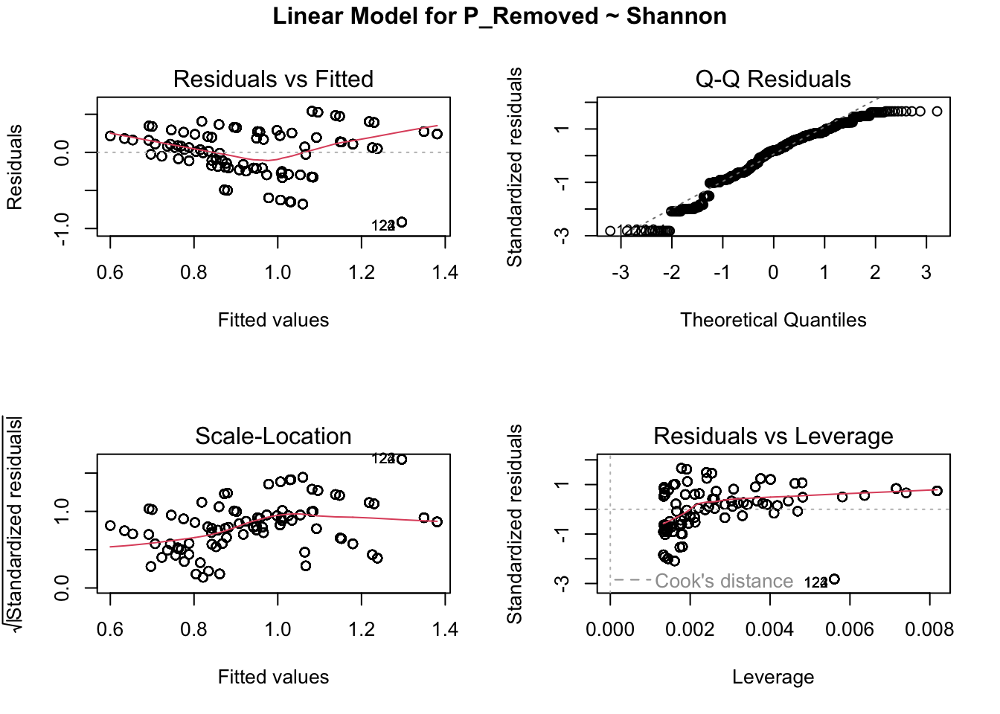
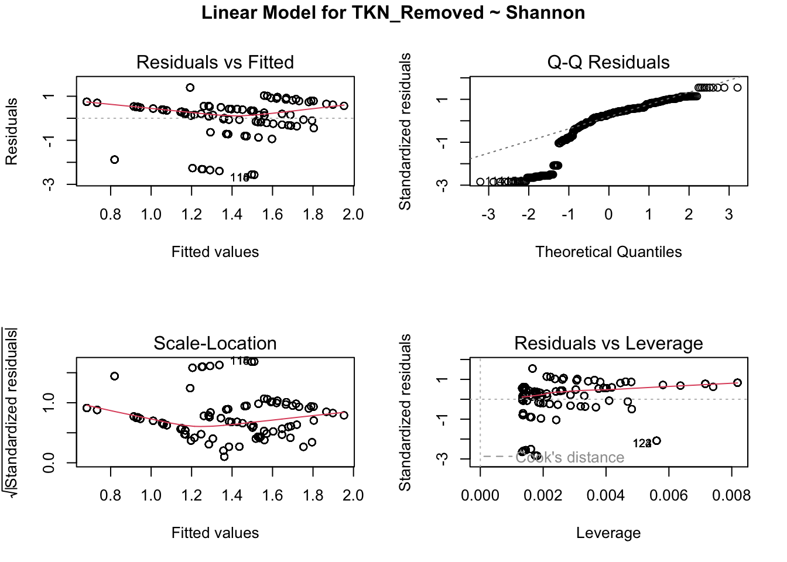
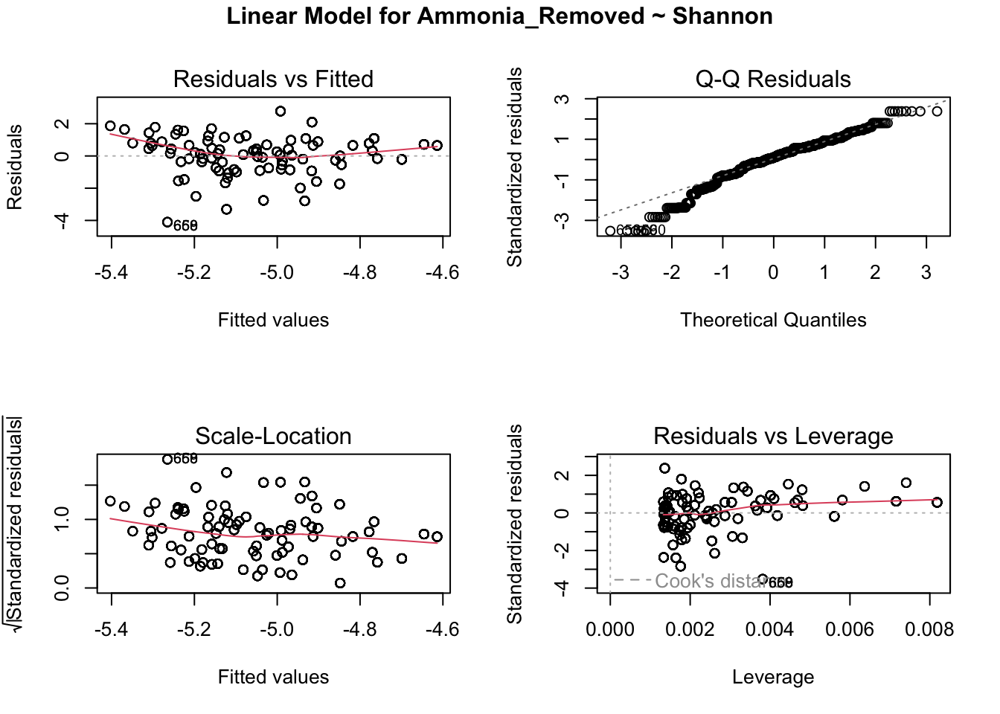
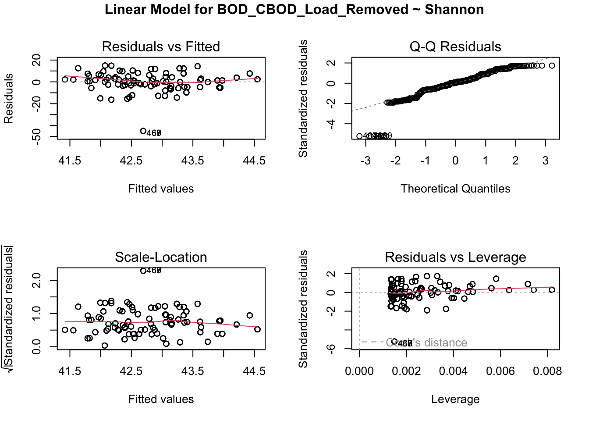
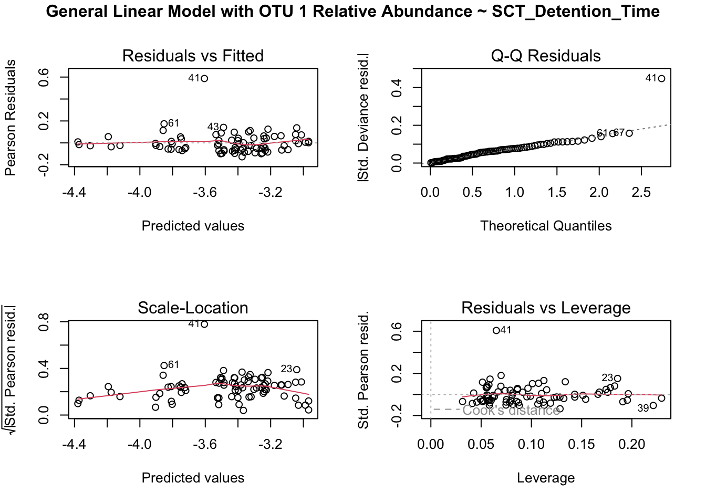
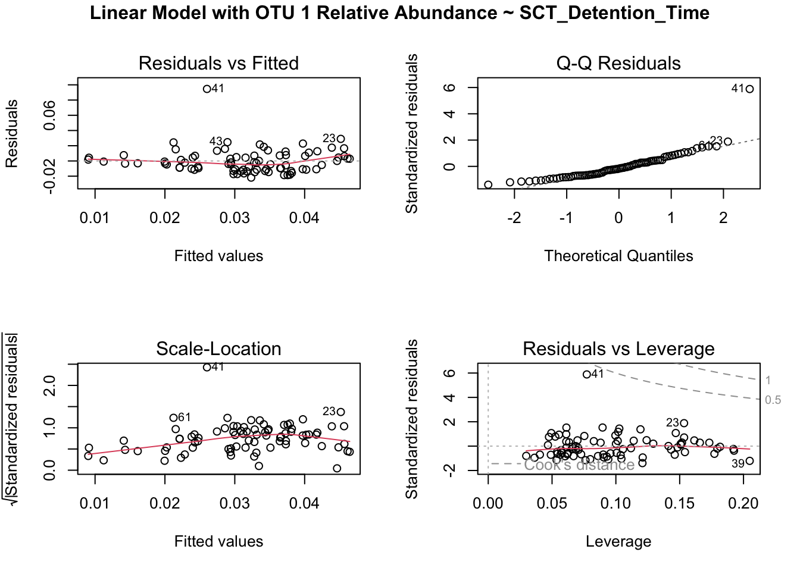

otu_mat<- read_excel("/Users/julietmalkowski/Desktop/Research/Kinetic_Model/abundance_table.xlsx")
#remove first 4 characters in every column name
colnames(otu_mat)<- substr(colnames(otu_mat), 5, nchar(colnames(otu_mat)))
otu_mat = as.data.frame(otu_mat)
#split first column by character '_' into two seperate columns
otu_mat[c('Process', 'Date')] <- str_split_fixed(otu_mat$le, '_', 2)
#drop le column
otu_mat = otu_mat[,-1]
#move last two columns to the front
otu_mat <- otu_mat %>%
select(Process, everything())
otu_mat <- otu_mat %>%
select(Date, everything())
#filter otu_mat to only contain AS-1 and AS-2 in process column
otu_mat <- otu_mat %>%
filter(Process == "AS-1" | Process == "AS-2")
#remove Process column
otu_mat = otu_mat[,-2]
#groupby date and find the mean of each column
otu_counts <- otu_mat %>%
group_by(Date) %>%
summarise_all(mean)
otu_p = otu_counts
#find the sum of each row
otu_p$sum <- rowSums(otu_p[,-1])
#divide each row by the sum
otu_p[,-1] <- otu_p[,-1] / otu_p$sum
#remove sum column
otu_p = otu_p[,-ncol(otu_p)]
#make otu_p from wide form to long form
otu_p <- otu_p %>%
pivot_longer(cols = -Date, names_to = "OTU", values_to = "Abundance")
#filter out rows with an Abundance less than 0.01
otu_p <- otu_p %>%
filter(Abundance >= 0.01)
#calculate Shannon Index and add it to otu_p column
shannon = function(x) {
-sum(x * log(x))
}
otu_shannon = otu_p
s = otu_shannon %>% group_by(Date) %>%
summarize(Shannon = shannon(Abundance))
otu_shannon = merge(otu_shannon, s, by = "Date")
output_metadata <- read_excel("/Users/julietmalkowski/Desktop/Research/Kinetic_Model/AS_metadata.xlsx")
output_metadata = as.data.frame(output_metadata)
#input parameters
input_metadata = output_metadata
input_metadata = input_metadata[,c(2,3,5,7,10,12,14,16,18,20)]
input_data = input_metadata
input_data = merge(otu_shannon, input_metadata, by = "Date")
#output parameters
output_metadata = output_metadata[,-c(1,3:8,10,12,14:20)]
output_data = merge(otu_shannon, output_metadata, by = "Date")
#change column 6 name
colnames(output_data)[6] <- "BOD_CBOD_Load_Removed"Linear Regressions on Input and Output Parameters
One of the primary methods for exploring data is through linear regressions. Linear regressions work under the assumption that the x and y variables is linear and that it follows a normal distribution. To check if the data is actually linear, four diagnostic plots are created to check whether the assumptions made by the linear model are met.
Linear Regressions were run for both Shannon Index and OTU 1 Relative Abundance, which has been shown to be highly prevelant in almost all AS samples.
Shannon Index was calculated after filtering out relative abunadnces above 1%
Loading Data
Connecting Metadata and OTU Counts
output_metadata <- read_excel("/Users/julietmalkowski/Desktop/Research/Kinetic_Model/AS_metadata.xlsx")
output_metadata = as.data.frame(output_metadata)
#input parameters
input_metadata = output_metadata
input_metadata = input_metadata[,c(2,3,5,7,10,12,14,16,18,20)]
input_data = input_metadata
input_data = merge(otu_shannon, input_metadata, by = "Date")
colnames(input_data)[8] <- "BOD_CBOD_Load_PE"
#output parameters
output_metadata = output_metadata[,-c(1,3:8,10,12,14:20)]
output_data = merge(otu_shannon, output_metadata, by = "Date")
#change column 6 name
colnames(output_data)[6] <- "BOD_CBOD_Load_Removed"
#remove column in output_data
input_data_ = input_data[,-c(2:4)]
input_data_ = as.data.frame(input_data_)
#remove duplicates
input_data_ = input_data_[!duplicated(input_data_[,1]),]
#make first column rownames in output_data_
rownames(input_data_) <- input_data_[,1]
#remove first column
input_data_ = input_data_[,-1]Effect of Input Parameters on Shannon Index
Interpretation for plots:
Plot 1- distribution of residuals according to values predicted by linear regression model- each point represents the distance between the response variable and the model prediction- we need a uniform distribution of the residual. For this plot we need a uniform distribution of the residuals- the homoscedasticity condition. This condition states that if the residuals form an approximate horizontal band around the 0 line, the variance of the residuals is homogeneous.
Plot 2- checks if the dispersion of residuals is caused by the explanatory variable- if the dispersion increases then it means the variances in each group are different
Plot 3- this plot shows the distribution of residuals in a quantile- quantile plot which evaluated the normality of the residuals. This plot compares the probability distribution of normal data and standardized residuals can be seen near the 1:1 line
Plot 4- shows the residuals and their influence- the location of points with strong influence can influence the interpretation of the data. If one or more observations are outliers then the model may be misfitted because of their exaggerated influence. A distance greater than 0.5 is problematic
#create multiple linear regression
lm.mult <- lm(Shannon ~ pH_RSS + temp_RSS + BOD_CBOD_Load_PE + COD_Load_PE + Ammonia_Load_RAW + TKN_Load_RAW + P_Load_PE + SCT_Detention_Time, data = input_data)
summary(lm.mult)
Call:
lm(formula = Shannon ~ pH_RSS + temp_RSS + BOD_CBOD_Load_PE +
COD_Load_PE + Ammonia_Load_RAW + TKN_Load_RAW + P_Load_PE +
SCT_Detention_Time, data = input_data)
Residuals:
Min 1Q Median 3Q Max
-0.34785 -0.09712 -0.01016 0.09621 0.24081
Coefficients:
Estimate Std. Error t value Pr(>|t|)
(Intercept) 7.029e+00 7.191e-01 9.774 < 2e-16 ***
pH_RSS -7.538e-01 9.354e-02 -8.059 3.07e-15 ***
temp_RSS 5.310e-03 2.843e-03 1.868 0.0622 .
BOD_CBOD_Load_PE -3.662e-03 7.574e-04 -4.835 1.62e-06 ***
COD_Load_PE -8.535e-05 5.977e-04 -0.143 0.8865
Ammonia_Load_RAW 1.744e-02 8.422e-03 2.071 0.0387 *
TKN_Load_RAW 5.030e-03 5.600e-03 0.898 0.3694
P_Load_PE -6.895e-01 6.578e-02 -10.482 < 2e-16 ***
SCT_Detention_Time 4.037e-01 2.272e-02 17.768 < 2e-16 ***
---
Signif. codes: 0 '***' 0.001 '**' 0.01 '*' 0.05 '.' 0.1 ' ' 1
Residual standard error: 0.13 on 743 degrees of freedom
Multiple R-squared: 0.5613, Adjusted R-squared: 0.5566
F-statistic: 118.8 on 8 and 743 DF, p-value: < 2.2e-16par(mfrow = c(2, 2), mar = c(3.9, 4, 1.2, 1.1), oma = c(0, 0,
0, 0))
plot(lm.mult)
As can be seen above, the results from each plot do not meet the assumptions of linear regression. The residuals are not homoscedastic, the residuals are not normally distributed, and there are outliers that are influencing the model.
Significant values include pH_RSS, BOD_CBOD_Load_PE,Ammonia_Load_RAW, P_Load_PE, and SCT_Detention_Time.
To fix this data run now with only significant values
lm.mult2 <- lm(Shannon ~ pH_RSS + BOD_CBOD_Load_PE + Ammonia_Load_RAW + P_Load_PE + SCT_Detention_Time, data = input_data)
summary(lm.mult2)
Call:
lm(formula = Shannon ~ pH_RSS + BOD_CBOD_Load_PE + Ammonia_Load_RAW +
P_Load_PE + SCT_Detention_Time, data = input_data)
Residuals:
Min 1Q Median 3Q Max
-0.32219 -0.09688 -0.01303 0.08360 0.23466
Coefficients:
Estimate Std. Error t value Pr(>|t|)
(Intercept) 7.0131513 0.6862416 10.220 < 2e-16 ***
pH_RSS -0.7265873 0.0904217 -8.036 3.64e-15 ***
BOD_CBOD_Load_PE -0.0036932 0.0007406 -4.987 7.65e-07 ***
Ammonia_Load_RAW 0.0124405 0.0081474 1.527 0.127
P_Load_PE -0.6479527 0.0629724 -10.289 < 2e-16 ***
SCT_Detention_Time 0.3780273 0.0191689 19.721 < 2e-16 ***
---
Signif. codes: 0 '***' 0.001 '**' 0.01 '*' 0.05 '.' 0.1 ' ' 1
Residual standard error: 0.1304 on 746 degrees of freedom
Multiple R-squared: 0.5566, Adjusted R-squared: 0.5536
F-statistic: 187.3 on 5 and 746 DF, p-value: < 2.2e-16par(mfrow = c(2, 2), mar = c(3.9, 4, 1.2, 1.1), oma = c(0, 0,
0, 0))
plot(lm.mult2)
Now we see slightly better results with Ammonia_Loading no longer being relevant
Determine Most Important Input Parameters based on Relative Abundances
Using Redundancy Analysis
otu_p_wide <- otu_p %>%
pivot_wider(names_from = OTU, values_from = Abundance) %>%
replace(is.na(.), 0)
otu_p_wide = as.data.frame(otu_p_wide)
#make first column rownames in output_data_
rownames(otu_p_wide) <- otu_p_wide[,1]
#remove first column
otu_p_wide = otu_p_wide[,-1]
as_metadata_input.z <- decostand(input_data_, method = "standardize")
as_metadata_input.rda <- rda(otu_p_wide ~ ., data = as_metadata_input.z)
fwd.sel <- ordiR2step(rda(otu_p_wide ~ 1, data = as_metadata_input.z), # lower model limit (simple!)
scope = formula(as_metadata_input.rda), # upper model limit (the "full" model)
direction = "forward",
R2scope = TRUE, # can't surpass the "full" model's R2
pstep = 1000,
trace = FALSE) # change to TRUE to see the selection process
#see which variables were selected
fwd.sel$callrda(formula = otu_p_wide ~ temp_RSS + SCT_Detention_Time + P_Load_PE +
TKN_Load_RAW + Ammonia_Load_RAW, data = as_metadata_input.z)#result RDA is: rda(formula = otu_p_wide ~ temp_RSS + SCT_Detention_Time + P_Load_PE + TKN_Load_RAW + Ammonia_Load_RAW, data = as_metadata_input.z)
Effect of Shannon Index on Output Parameters using Linear Regression
lm1 <- lm(COD_Load_Removed ~ Shannon, data = output_data)
par(mfrow = c(2, 2))
plot(lm1)
title("Linear Model for COD_Load_Removed ~ Shannon", line = -1, outer = TRUE)
summary(lm1)
Call:
lm(formula = COD_Load_Removed ~ Shannon, data = output_data)
Residuals:
Min 1Q Median 3Q Max
-50.154 -7.706 1.259 8.229 44.484
Coefficients:
Estimate Std. Error t value Pr(>|t|)
(Intercept) 85.394 1.966 43.42 < 2e-16 ***
Shannon 10.044 2.729 3.68 0.00025 ***
---
Signif. codes: 0 '***' 0.001 '**' 0.01 '*' 0.05 '.' 0.1 ' ' 1
Residual standard error: 14.6 on 750 degrees of freedom
Multiple R-squared: 0.01773, Adjusted R-squared: 0.01642
F-statistic: 13.54 on 1 and 750 DF, p-value: 0.0002502lm2 <- lm(P_Removed ~ Shannon, data = output_data)
par(mfrow = c(2, 2))
plot(lm2)
title("Linear Model for P_Removed ~ Shannon", line = -1, outer = TRUE)
summary(lm2)
Call:
lm(formula = P_Removed ~ Shannon, data = output_data)
Residuals:
Min 1Q Median 3Q Max
-0.91548 -0.20519 0.06134 0.24145 0.54031
Coefficients:
Estimate Std. Error t value Pr(>|t|)
(Intercept) 0.34889 0.04382 7.961 6.3e-15 ***
Shannon 0.90793 0.06083 14.927 < 2e-16 ***
---
Signif. codes: 0 '***' 0.001 '**' 0.01 '*' 0.05 '.' 0.1 ' ' 1
Residual standard error: 0.3254 on 750 degrees of freedom
Multiple R-squared: 0.229, Adjusted R-squared: 0.228
F-statistic: 222.8 on 1 and 750 DF, p-value: < 2.2e-16lm3 <- lm(TKN_Removed ~ Shannon, data = output_data)
par(mfrow = c(2, 2))
plot(lm3)
title("Linear Model for TKN_Removed ~ Shannon", line = -1, outer = TRUE)
summary(lm3)
Call:
lm(formula = TKN_Removed ~ Shannon, data = output_data)
Residuals:
Min 1Q Median 3Q Max
-2.5674 -0.1711 0.2739 0.5188 1.3956
Coefficients:
Estimate Std. Error t value Pr(>|t|)
(Intercept) 2.3620 0.1218 19.399 <2e-16 ***
Shannon -1.4782 0.1690 -8.747 <2e-16 ***
---
Signif. codes: 0 '***' 0.001 '**' 0.01 '*' 0.05 '.' 0.1 ' ' 1
Residual standard error: 0.904 on 750 degrees of freedom
Multiple R-squared: 0.09257, Adjusted R-squared: 0.09136
F-statistic: 76.51 on 1 and 750 DF, p-value: < 2.2e-16lm4 <- lm(Ammonia_Removed ~ Shannon, data = output_data)
par(mfrow = c(2, 2))
plot(lm4)
title("Linear Model for Ammonia_Removed ~ Shannon", line = -1, outer = TRUE)
summary(lm4)
Call:
lm(formula = Ammonia_Removed ~ Shannon, data = output_data)
Residuals:
Min 1Q Median 3Q Max
-4.1028 -0.6071 0.1175 0.7188 2.7766
Coefficients:
Estimate Std. Error t value Pr(>|t|)
(Intercept) -5.6568 0.1572 -35.978 < 2e-16 ***
Shannon 0.9177 0.2182 4.205 2.92e-05 ***
---
Signif. codes: 0 '***' 0.001 '**' 0.01 '*' 0.05 '.' 0.1 ' ' 1
Residual standard error: 1.167 on 750 degrees of freedom
Multiple R-squared: 0.02304, Adjusted R-squared: 0.02173
F-statistic: 17.69 on 1 and 750 DF, p-value: 2.921e-05lm5 <- lm(BOD_CBOD_Load_Removed ~ Shannon, data = output_data)
par(mfrow = c(2, 2))
plot(lm5)
title("Linear Model for BOD_CBOD_Load_Removed ~ Shannon", line = -1, outer = TRUE)
summary(lm5)
Call:
lm(formula = BOD_CBOD_Load_Removed ~ Shannon, data = output_data)
Residuals:
Min 1Q Median 3Q Max
-44.966 -4.542 0.553 4.702 14.932
Coefficients:
Estimate Std. Error t value Pr(>|t|)
(Intercept) 40.41 1.16 34.839 <2e-16 ***
Shannon 3.64 1.61 2.261 0.024 *
---
Signif. codes: 0 '***' 0.001 '**' 0.01 '*' 0.05 '.' 0.1 ' ' 1
Residual standard error: 8.612 on 750 degrees of freedom
Multiple R-squared: 0.006771, Adjusted R-squared: 0.005446
F-statistic: 5.113 on 1 and 750 DF, p-value: 0.02404Resulting p-values are all significant: In order: COD_Load_Removed:0.00025 P_Removed: 2e-16 TKN_Removed: 2e-16 Ammonia_Removed: 2.92e-05 BOD_CBOD_Load_Removed: 0.024
OTU 1 Analysis Comparing GLM and LM
The generalized linear model is able to use a specific binomial distribution (where input values range between 0-1) on the relative abundance data so the changes of the inputs on this distribution can be specifically calculated. This model also does not assume a linear relationship.
Comparing a Generalized Linear Model vs. Linear Model for Input Parameters on OTU 1
#generalized linear model
otu_1 <- input_data %>% filter(OTU == 1)
model1 <- glm(Abundance ~ temp_RSS + SCT_Detention_Time + P_Load_PE + TKN_Load_RAW + Ammonia_Load_RAW + pH_RSS + BOD_CBOD_Load_PE, family = binomial,
data = otu_1)Warning in eval(family$initialize): non-integer #successes in a binomial glm!summary(model1)
Call:
glm(formula = Abundance ~ temp_RSS + SCT_Detention_Time + P_Load_PE +
TKN_Load_RAW + Ammonia_Load_RAW + pH_RSS + BOD_CBOD_Load_PE,
family = binomial, data = otu_1)
Coefficients:
Estimate Std. Error z value Pr(>|z|)
(Intercept) 3.2559247 96.5997353 0.034 0.973
temp_RSS -0.0101602 0.3028600 -0.034 0.973
SCT_Detention_Time 0.9027379 3.1992126 0.282 0.778
P_Load_PE -2.8495646 9.9857297 -0.285 0.775
TKN_Load_RAW -0.0008063 0.7355789 -0.001 0.999
Ammonia_Load_RAW -0.1687601 1.1657600 -0.145 0.885
pH_RSS 0.2028448 12.5584428 0.016 0.987
BOD_CBOD_Load_PE 0.0031766 0.0969474 0.033 0.974
(Dispersion parameter for binomial family taken to be 1)
Null deviance: 0.77079 on 80 degrees of freedom
Residual deviance: 0.55062 on 73 degrees of freedom
AIC: 21.189
Number of Fisher Scoring iterations: 7par(mfrow = c(2, 2))
plot(model1)
title("General Linear Model with OTU 1 Relative Abundance ~ SCT_Detention_Time", line = -1, outer = TRUE)
#normal linear model
model2 <- lm(Abundance ~ temp_RSS + SCT_Detention_Time + P_Load_PE + TKN_Load_RAW + Ammonia_Load_RAW + pH_RSS + BOD_CBOD_Load_PE,
data = otu_1)
summary(model2)
Call:
lm(formula = Abundance ~ temp_RSS + SCT_Detention_Time + P_Load_PE +
TKN_Load_RAW + Ammonia_Load_RAW + pH_RSS + BOD_CBOD_Load_PE,
data = otu_1)
Residuals:
Min 1Q Median 3Q Max
-0.021875 -0.010883 -0.002686 0.006813 0.094619
Coefficients:
Estimate Std. Error t value Pr(>|t|)
(Intercept) 0.1644549 0.2869814 0.573 0.56837
temp_RSS -0.0004897 0.0008712 -0.562 0.57577
SCT_Detention_Time 0.0231091 0.0084472 2.736 0.00781 **
P_Load_PE -0.0684792 0.0243500 -2.812 0.00631 **
TKN_Load_RAW 0.0010703 0.0022119 0.484 0.62992
Ammonia_Load_RAW -0.0044773 0.0033803 -1.325 0.18946
pH_RSS 0.0067213 0.0381149 0.176 0.86051
BOD_CBOD_Load_PE 0.0001117 0.0002840 0.393 0.69518
---
Signif. codes: 0 '***' 0.001 '**' 0.01 '*' 0.05 '.' 0.1 ' ' 1
Residual standard error: 0.01673 on 73 degrees of freedom
Multiple R-squared: 0.2346, Adjusted R-squared: 0.1612
F-statistic: 3.196 on 7 and 73 DF, p-value: 0.005231par(mfrow = c(2, 2))
plot(model2)
title("Linear Model with OTU 1 Relative Abundance ~ SCT_Detention_Time", line = -1, outer = TRUE)
Here we see the generalized linear model predict no significant values, while the linear model predicts significant values.
Conclusions
Relevant Input Parameters that explain 36% of variance in the data:
temp_RSS
SCT_Detention_Time
P_Load_PE
TKN_Load_RAW
Ammonia_Load_RAW
Relevant Output Parameters from generalized linear model on OTU 1: - none